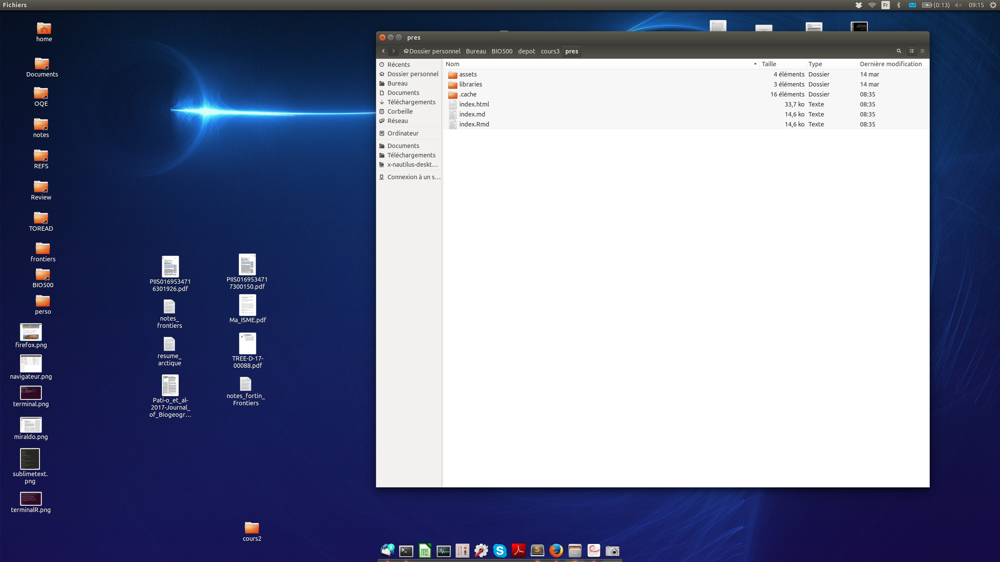
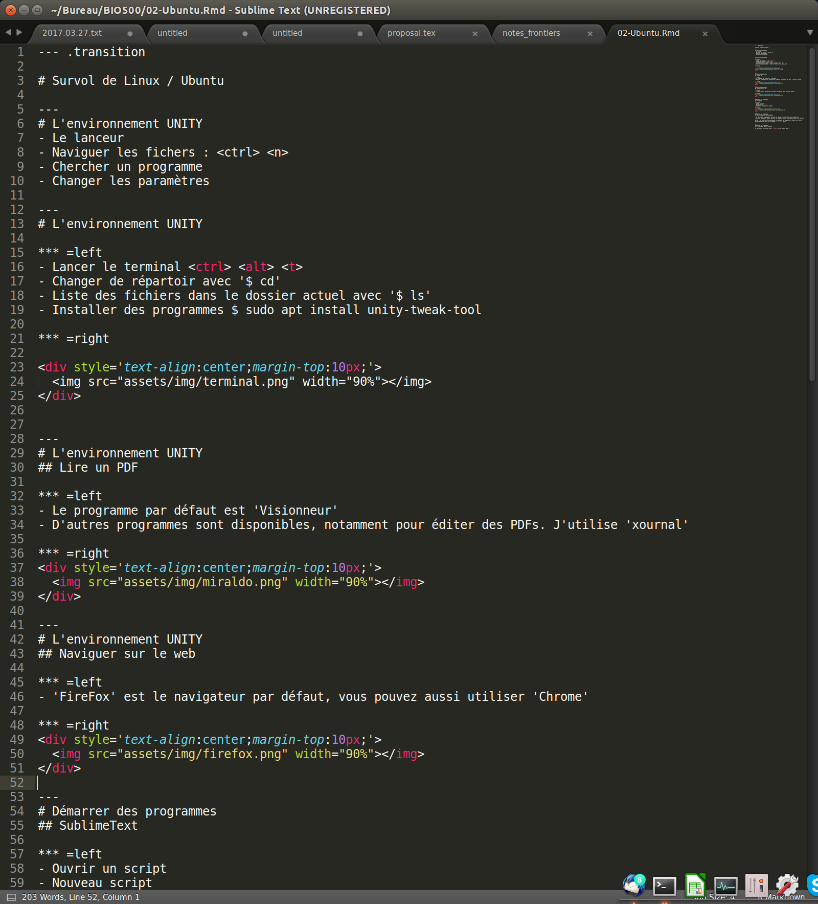
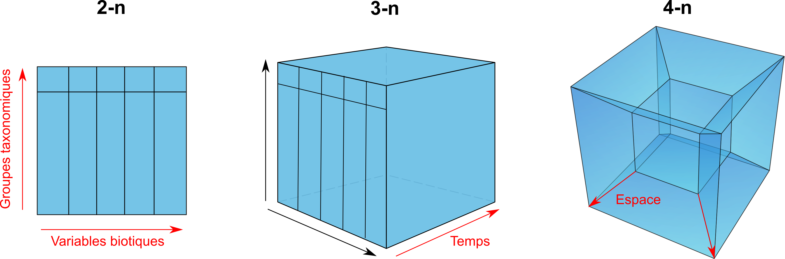

- Ces diapositives sont disponibles en version web et en PDF.
- L'ensemble du matériel de cours est disponible sur la page du portail moodle.
Séance 3: L'organisation des données - 1
BIO 500 - Méthodes en écologie computationnelle
Dominique Gravel & Steve Vissault
Laboratoire d'écologie intégrative
Séance 3
Survol de Linux / Ubuntu
L'environnement UNITY
- Le lanceur
- Naviguer dans les fichers :
<ctrl> <n> - Chercher un programme
- Changer les paramètres

L'environnement UNITY
Le terminal
- Lancer le terminal
<ctrl> <alt> <t> - Changer de répertoire avec
cd - Liste des fichiers dans le dossier actuel avec
ls - Installer des programmes
sudo apt install unity-tweak-tool
L'environnement UNITY
Lire un PDF
- Le programme par défaut est
Visionneur - D'autres programmes sont disponibles, notamment pour éditer des PDFs. J'utilise
xournal.

L'environnement UNITY
Naviguer sur le web
FireFoxest le navigateur par défaut, vous pouvez aussi utiliserChrome

Démarrer des programmes
SublimeText2
- Ouvrir un script
- Nouveau script
- Changer le surligneur de syntaxe

Démarrer des programmes
Lancer R à partir de SublimeText
- Il faut lancer 'SublimeREPL' au moyen des touches
<ctrl> <shift> <p>et sélection R - Une fois la nouvelle fenêtre ouverte, les commandes peuvent être soumises avec
<ctrl> <enter>
ASTUCE: les fenêtres sur Linux peuvent être alignées sur la gauche, la droite ou le centre automatiquement au moyen de la commande <ctr> <alt> <flèche>
Démarrer des programmes
R directement dans le terminal
Il faut ouvrir un terminal avec <ctrl> <alt> <t> et ensuite taper R
L'organisation des données
Où sommes-nous?

Le Tesseract de la biologie

- Il est difficile de stocker les données écologiques dans un tableau excel (n-2) lorsque les données écologiques ont (n-4).
Les bases de données (BDs) à la rescousse

- Les BDs permettent de redimensionner ce problème (plusieurs tableaux de n-2 avec des relations) grâce au modèle d'entités-relations.
- Chaque table correspond à une dimension. Les tables sont liées entre elles par des relations. Cette structure est appelée schéma en étoile.
Avantages des bases de données
- Maintenir l'intégrité entre les enregistrements de nos tableaux. Une observation ne peut être faite sur un site qui n'existe pas.
- Normaliser et contrôler la qualité des données. Chaque colonne est un type précis de données. Des contraintes peuvent être appliquées sur chaque colonne.
- Éviter les redondances dans le stockage de l'information (obtenir une forme normale), voir la section Format de donnée du cours 2.
Avantages des bases de données
Autres avantages indéniables:
- Obtenir un gain de temps et de performance.
- Séparer les données brutes des données destinées aux analyses.
- Rendre flexible la préparation des données pour les analyses.
- Pemettre le travail simultané de plusieurs utilisateurs grâce à l'approche client-serveur.
- Déclencher des procédures de sauvegardes.
- Suivre les modifications/ajouts à la BD (journal de transactions).
L'approche client-serveur

- Le serveur est un ordinateur contenant la base de données.
- Si le serveur est votre ordinateur, on se connectera alors localement (environnement de développement).
- Si le serveur est physiquement ailleurs (mais accessible via le réseau), on parlera de serveur distant (environnement de production).
L'approche client-serveur
- Le client peut être un logiciel, tout comme un langage installé sur votre ordinateur.
- On se sert de ce langage ou logiciel pour interagir avec le serveur de base de données présent localement ou à distance.
- On peut donc avoir plusieurs clients sur un même ordinateur.
L'approche client-serveur


- Il existe une grande diversité de clients, mais nous utiliserons essentiellement les trois suivants:
- pgadmin3: logiciel avec une interface graphique.
- R: language de programmation scientifique. <!-- - psql: un autre language utile (si le temps le permet). -->
Note: La plupart des langages de programmation disposent de librairies permettant de se connecter à une base de données sur un serveur local ou distant.
L'approche client-serveur
Le client se connecte pour effectuer différentes opérations:
- Créer une base de données.
- Créer des tables avec des relations.
- Insérer des données.
- Interroger les données par requête.
- Supprimer des données ou des tables.
- Mettre à jour des données ou des tables.
- Supprimer la base de données.
L'approche client-serveur
Le serveur répond avec des données, des messages d'erreurs ou des status (e.g. Données insérées).
L'approche client-serveur avec multi-utilisateurs
On pourrait envisager la situation suivante...

L'approche multi-utilisateurs peut uniquement se faire si le serveur est distant.
Les Systèmes de Gestion de Base de Données (SGBDs)
Les SGBDs
- Les base de données sont présentes sur un serveur.
- Pour créer, interroger, gérer et maintenir des bases de données, on utilisera un Système de Gestion de Base de Données (souvent appelé SGBD) installé sur le serveur.
La diversité des SGBDs
Il en existe une multitude:

- Mais ces systèmes disposent tous d'un dénominateur commun: le
langage SQL - Dans ce cours, nous utiliserons le système de gestion de données
PostgreSQL.
Le langage SQL
Définition
Le SQL (Structured Query Language) est le langage des SGBDs. Il permet de communiquer avec une base de données.
Le langage SQL
Le SQL permet de:
- Créer une base de données (
CREATE DATABASE). - Créer des tables et établir des relations (
CREATE TABLE). - Insérer des données (
INSERT). - Interroger les données par requête (
SELECT). - Supprimer des données ou des tables (
DROP,DELETE). - Mettre à jour des données ou des tables (
UPDATE,ALTER). - Supprimer la base de données (
DROP DATABASE).
Chacune de ces commandes est une instruction SQL envoyée au serveur pour manipuler et interroger la base de données.
Le langage SQL
Pour cette séance, nous nous attarderons seulement à:
- Créer une base de données (
CREATE DATABASE). - Créer des tables et établir des relations (
CREATE TABLE). - Supprimer ou modifier des tables (
DROP TABLE,ALTER TABLE). - Supprimer la base de données (
DROP DATABASE).
Soyez attentifs, car le travail de cette semaine consiste à écrire un script qui permet la création de la base de données (les tables et leurs relations) pour entreposer les données que vous avez collectées lors de la séance 2.
Conceptualisation d'une base de données en 5 étapes
Étape 1. Faire une liste des variables
Exercice (15-20 minutes):
- Dresser la liste des informations collectées par les différents groupes.
- Regrouper les variables communes entre les équipes pour obtenir une ontologie conjointe.
Étape 2. Regrouper les variables dans des tables
Exercice (15-20 minutes): Regrouper les variables dans des tables.
- Déterminer les tables/entités:
- Qu'elles sont les unités d'échantillonnage? Autrement dit, sur quelles entités portent nos mesures?
- Remplir les tables avec les variables de l'étape 1.
À ce stade de la conceptualisation, une table est une entité possédant des attributs. Chaque attribut est une colonne.
Étape 3. Établir le type d'association entre les tables
Le concept d'association

Étape 3. Établir le type d'association entre les tables
Il existe plusieurs types d'association:
| Table 1 | Table 2 | Relation | exemple |
|---|---|---|---|
| 1 | 1 | one-to-one | personne ←→ permis de conduire |
| 0..1 | 1 | optionnel dans la table 1, one-to-one | permis de conduire ←→ personne |
| 0..n ou n | 0..n or n | optionnel dans les deux tables, many-to-many | personne ←→ livre |
| 1..n ou n | 1 | many-to-one | personne ←→ lieu de naissance |
Exercice (5 minutes): Quel(s) type(s) d'association retrouve-t-on entre nos tables?
Étape 4. Établir les clés primaires et étrangères
Le concept des clés primaires et des clés étrangères

Important:
- Une clé primaire garantie le caractère unique d'un enregistrement (ligne d'une table).
- Une clé primaire ne peut donc jamais être
NULL. - Une clé primaire peut être composite, une combinaison de colonnes.
Étape 4. Établir les clés primaires et étrangères
Exercice (5 minutes)
- Déterminer quels sont les attributs/colonnes garantissant le caractère unique d'un enregistrement (ligne d'une table).
- Déterminer quelles sont les clés étrangères.
Étape 5. Assigner un type de données aux attributs
Chaque attribut d'une table doit correspondre à un type de données:
| Appelation | Type | Valeurs | Taille |
|---|---|---|---|
BOLEAN |
Boléen | vrai/faux | 1 octet |
INTEGER |
Entiers | -998, 123 | 1 à 4 octets |
DOUBLE, FLOAT |
Nombres réels | 9.98, -4.34 | 4 à 8 octets |
CHAR,VARCHAR |
Chaine de caractères | lapin | n x 1 à 8 octets |
TIMESTAMP,DATE,TIME |
Dates et heures | 1998-02-16 | 4 à 8 octets |
Pour tous les types de données, voir la documentation PostgreSQL
Exercice (15 minutes): Associer à chaque attribut un type de données.
En résumé
Finalement, qu'est-ce qu'un modèle conceptuel pour une base de données?
Une façon de représenter l'information dans un modèle de type entités-relations où chaque entité (table) possède des attributs (colonnes).
L'étape suivante est de transcrire ce modèle conceptuel des données en modèle logique de données (c.a.d compréhensible par l'ordinateur).
Transcrire ces étapes en SQL
Les grandes étapes
- Spécifier la connexion avec le serveur
- Créer la base de données
- Créer les tables et spécifier les clés
- Ajouter de l'information dans les tables
- Faire des requêtes pour extraire l'information
Se connecter au SGBD (PostgreSQL)
Pour que le client communique avec la SGBD, les informations de connection au serveur sont indispensables:
host: L'adresse du serveur.localhostsi la base de données est sur votre ordinateur.port: La base de données écoute sur un port spécifique du serveur.user: le nom d'utilisateurpassword: le mot de passe de l'utilisateur.dbname: le nom de la base de données
Se connecter au SGBD (PostgreSQL) via R
conest un objet contenant la connexion avec le serveur.- On utilisera la fonction
dbSendQuery()pour envoyer les instructions SQL. - Le deuxième argument de la fonction
dbSendQuery()est une chaine de caractères contenant les instructions SQL.
library(RPostgreSQL)
con <- dbConnect(PostgreSQL(), host="localhost",
port=5432, user= "postgres", password=NA)
dbSendQuery(con,"Instructions SQL à envoyer")
Se connecter au SGBD (PostgreSQL) via pgAdmin3
- On préfère parfois un interface graphique pour interagir avec la SGBD.
Création de la base de données via R
dbSendQuery(con,"CREATE DATABASE bd_films;")
## <PostgreSQLResult>
La SGBD nous répond... mais elle n'a pas grand chose à ajouter.
Important:
- En SQL, chaque instruction se termine par un point-virgule.
- Les instructions sont écrites en majuscules et les variables en minuscules.
- Toutes les instructions SQL sont énumérées et expliquées en Français à cette adresse: http://docs.postgresql.fr/9.5/sql-commands.html
Création de la base de données via R
Puis, on se connecte à cette nouvelle base de données grâce à la fonction dbConnect():
dbConnect(con,dbname="bd_films")
## <PostgreSQLConnection>
Création d'une table avec clé primaire
Voici un exemple d'instruction SQL pour créer la table films.
CREATE TABLE films (
code char(5),
titre varchar(40),
did integer,
date_prod date,
genre varchar(10),
duree interval hour to minute,
PRIMARY KEY (code,titre)
);
filmsest le nom de la table- Chaque attribut de la table (
code,titreetc) dispose d'un type de données (char(5),varchar(40)etc) - La dernière ligne correspond aux contraintes de la table telle que la clé primaire. Cette contrainte est nommée
pkey_films - Question: Cette clé primaire est composite ou simple?
Création d'une table avec clé étrangère
Si l'on veut créer une table acteurs et référencer cette table à la table films.
CREATE TABLE acteurs (
nom varchar(40),
prenom varchar(40),
naissance date,
code char(5),
titre varchar(40),
PRIMARY KEY (nom,prenom),
FOREIGN KEY (code, titre) REFERENCES
films (code, titre) ON DELETE CASCADE
);
- On déclare
prenometnomcomme étant la clé primaire de la tableacteurs. - On référence les attributs
codeettitrecomme étant la clé étrangère.
Création d'une table avec clé étrangère
Si l'on veut créer une table acteurs et référencer cette table à la table films.
CREATE TABLE acteurs (
nom varchar(40),
prenom varchar(40),
naissance date,
code char(5),
titre varchar(40),
PRIMARY KEY (nom,prenom),
FOREIGN KEY (code, titre) REFERENCES
films (code, titre) ON DELETE CASCADE
);
Important:
- On ne peut plus insérer d'acteurs jouant dans un film qui n'est pas référencé dans la table
films. C'est ce que l'on appelle l'intégrité référentielle. - Lorsque l'on supprime un enregistrement dans
films, les acteurs référencés à ce film vont être automatiquement supprimés grâce à l'instructionCASCADE.
Création d'une table avec R
On se sert de R pour envoyer l'instruction SQL de création de la table:
films_sql <- "
CREATE TABLE films (
code char(5),
titre varchar(40),
did integer,
date_prod date,
genre varchar(10),
duree interval hour to minute,
PRIMARY KEY(code,titre)
);"
dbSendQuery(con,films_sql)
Création d'une table
Exercice pour le travail de session (20 minutes):
En vous inspirant des exemples et de la syntaxe SQL expliquée précédemment, écrivez le script contenant les instructions SQL permettant la création de table la personnes.
Supprimer la base de données
dbSendQuery(con,"DROP DATABASE bd_films;")
## <PostgreSQLResult>
dbDisconnect(con)
## [1] TRUE